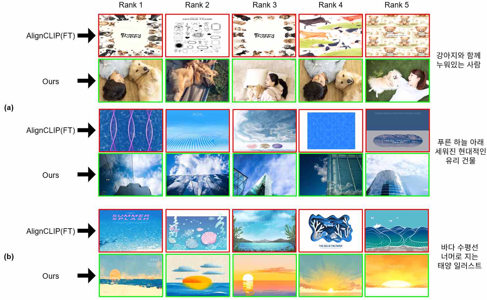
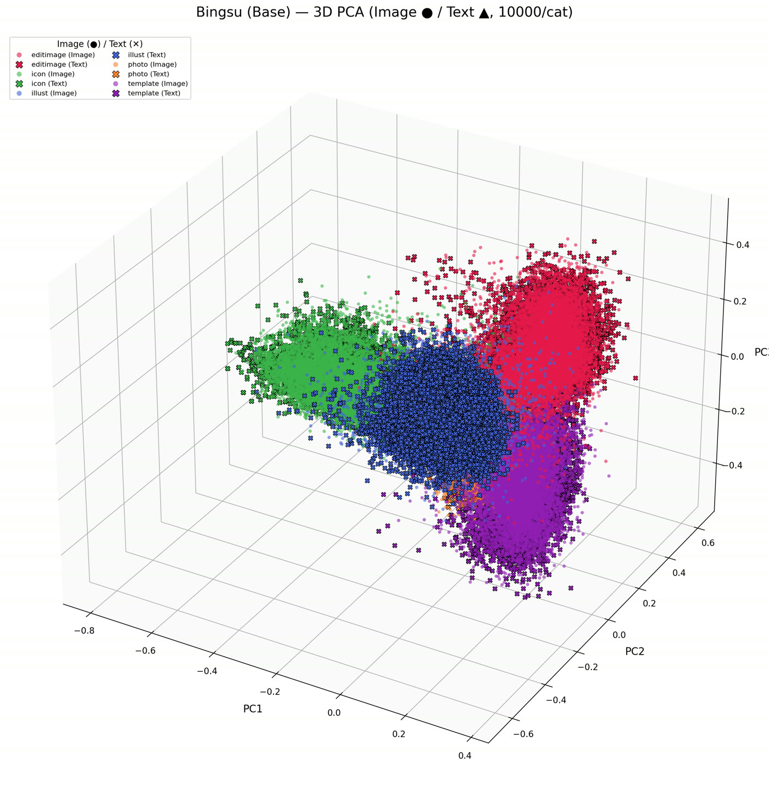

← 홈
한국어 특화 CLIP 모델 기반의
KCC 2026 · 포스터 · 1저자
한국어 특화 CLIP 모델 기반의
멀티모달 이미지 검색 시스템 설계 및 구현
1,028,223
이미지-한국어 캡션 쌍
7.8ms
평균 검색 지연 (RTX 3090)
~10×
번역 기반 AlignCLIP 대비
3.0GB
GPU 상주 특징 벡터
01
Overview
- 문제: 메타데이터 검색은 이미지 내용을 반영하지 못함. 영어 CLIP + 실시간 번역은 지연과 의미 손실 발생
- 목표: 한국어 쿼리를 직접 처리하는 100만 장 규모 실시간 검색 + 학습 데이터 자동 구축
- 결과: 평균 7.8ms 검색, 한국어 쿼리 내 카테고리 키워드 인식
- 시스템: Django REST API (요청 처리) + PyTorch GPU 모듈 (검색 추론)

02
Dataset
01카테고리 프롬프트 캡셔닝BLIP-large
02한국어 번역iris-7b (LLM)
03규칙 기반 품질 검증불량 298건 제거
04이미지-캡션 쌍1,028,223쌍 (JSON)
- 카테고리별 prefix 매핑: “a photograph of” (photo), “an illustration of” (illust) 등
- 목적: 같은 카테고리 내 임베딩 일관성 + 쿼리 내 카테고리 키워드(“사진”, “템플릿”) 반영
davidkim205/iris-7b로 영어 캡션을 한국어로 번역- 검증 규칙: 반복 토큰 · 비정상 특수문자 · 한글 비율 임계값
- 산업용 실데이터 1,028,521장 → 번역 불량 293장 + 캡션 불량 5장 제거
카테고리별 이미지 수
03
Fine-tuning
- 사전 학습 모델:
Bingsu/clip-vit-large-patch14-ko(지식증류 기반 한국어 CLIP) - 한계: 한국어 대응력은 좋지만 산업용 도메인 어휘와 시각적 세부 특성은 부족
- 이미지 · 텍스트 인코더를 모두 학습하는 이미지-캡션 대조 학습
- 학습 모델로 이미지 · 캡션 특징 벡터 추출 → L2 정규화 → 카테고리 정보와 함께 H5 저장
04
Search
01한국어 쿼리번역 없음
02텍스트 인코더파인튜닝 모델, 768-d
03코사인 유사도torch.mv, 전체 DB 일괄
04Top-K카테고리 필터 보조
- GPU 인메모리 구조: 1,028,223 × 2 (이미지 + 캡션) × 768 × FP16 ≈ 3.0GB
- 시스템 시작 시 PyTorch 텐서로 일괄 적재 → 검색 시 디스크 I/O 없음
- 검색 모드 2종: (1) 이미지 검색 · (2) 캡션 검색
05
Analysis
수행 시간 (RTX 3090, 쿼리당 10회 평균 warm latency)
| 모델 | 번역 | 추론 | 검색 | 전체 (ms) |
|---|---|---|---|---|
| AlignCLIP (FT) | 69.0 | 4.9 | 1.9 | 75.8 |
| Ours | – | 5.9 | 1.9 | 7.8 |
단계별 지연 · 0–80ms
번역추론검색 (약 102만 장)
- 번역 단계 제거 → 약 10배 빠른 응답, 지연의 91%가 번역
검색 품질 (정성 평가)

- 의미 보존 — “강아지와 함께 누워있는 사람”: Ours는 피사체 간 관계 반영, AlignCLIP은 번역 중 의미가 분절되어 단어 단위 속성만 매칭
- 카테고리 인식 — “바다 수평선 너머로 지는 태양 일러스트”: Ours는 illust 카테고리 일몰 반환, AlignCLIP은 “지는 태양” 왜곡 + “일러스트” 누락
06
Beyond the paper
학습 전략 비교
- 설정: LR 5e-6 · batch 32 · 10 epochs · weight decay 0.2 · temperature 0.07 고정 · 학습/검증 9:1
- 평가: 전체 데이터에서 카테고리 비율대로 뽑은 10만 쌍, 10만 개 후보 전체 대상 Recall@K
- 평가셋이 학습 데이터와 분리되지 않음 → 절대 성능이 아닌 전략 간 상대 비교로 해석
Mean R@1 (%) · 0–60
| Model | I2T R@1 | I2T R@10 | T2I R@1 | T2I R@10 | Modality gap ↓ |
|---|---|---|---|---|---|
| Baseline | 53.51 | 89.46 | 55.86 | 90.44 | 0.921 |
| Hard Negative | 53.11 | 89.12 | 55.14 | 90.02 | 0.772 |
| Multi-task | 49.82 | 86.39 | 52.11 | 87.36 | 1.206 |
| All Combined | 47.18 | 83.94 | 44.19 | 82.38 | 1.010 |
- Hard Negative: 같은 카테고리 negative 가중치 2배 · Multi-task: 카테고리 분류 보조 손실 (λ = 0.1) · All Combined: 둘 + 텍스트 prefix
- 기법 결합 시 오히려 하락 (All Combined −9.0%p), Hard Negative는 modality gap −16%
- 카테고리별 R@1: editimage 68.7 · icon 58.8 · illust 58.7 · template 52.2 · photo 46.7

벡터 저장소 변천
- Faiss (메모리 전용, 재시작마다 재구축) → Qdrant (HNSW, 디스크 영구 저장, 메타데이터 필터) → GPU 인메모리 exact search
- 근사 검색 없이 100만 벡터 Top-K 1.9ms
후속 연구 준비: 부정 표현
- “눈이 없는 산”처럼 부정이 포함된 쿼리에서 CLIP이 오히려 해당 객체를 반환하는 문제
- Qwen2.5-7B-Instruct + vLLM으로 부정 캡션 생성 후 검증 필터링, 약 25.6만 개 확보 (“… with no passengers”)
07